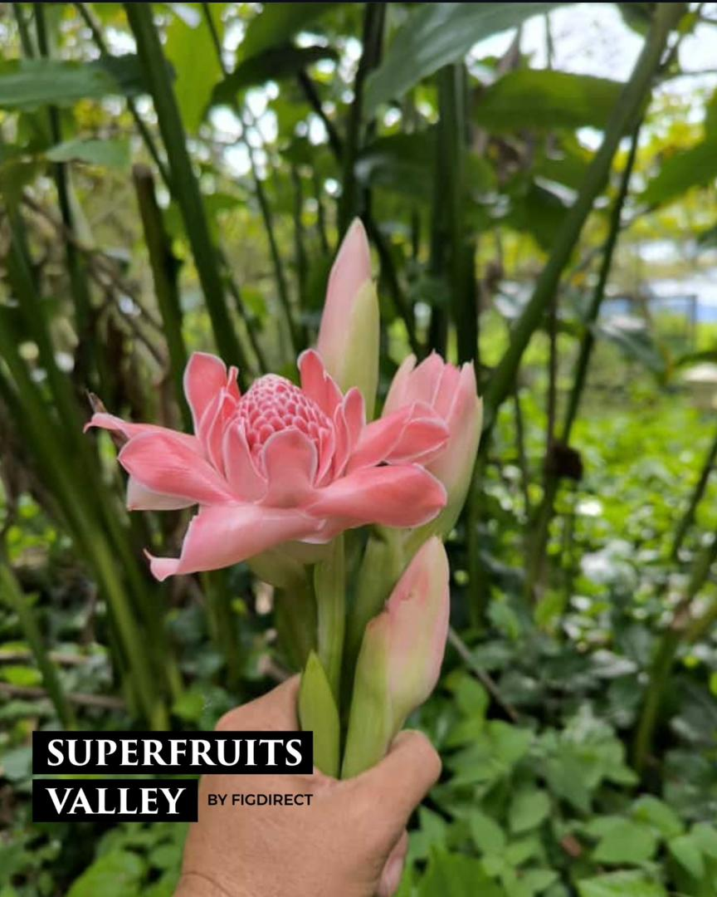

Robin Lim, founder and owner of Superfruits Valley , is recognised for pioneering Malaysia’s modern superfruit farming industry by developing one of the country’s largest superfruit estates in Chuping, Perlis, with over 150,000 plants across tens of hectares. Since establishing the farm in 2016, he has successfully introduced large-scale cultivation of premium crops such as lemons, figs, gac fruit, finger limes, mulberries, and passionfruit, helping reduce Malaysia’s reliance on imported produce. He is also known for implementing sustainable and pesticide-free farming methods, adopting IoT smart farming technology, creating the Fruju health drink brand, supplying premium fruits to top hotels and restaurants, collaborating with local universities on agricultural research, and transforming Superfruits Valley into a recognised agrotourism and innovation hub

✔ Founder of Superfruit Valley in Perlis.
✔ Introduced premium superfruits such as figs, berries, and pomegranates.
✔ Applied modern IoT farming technologies.
✔ Promoted agro-tourism and sustainable agriculture in Malaysia.